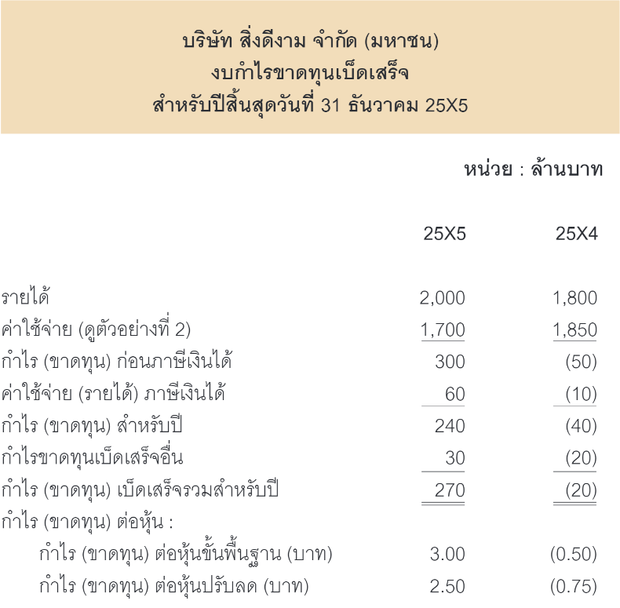
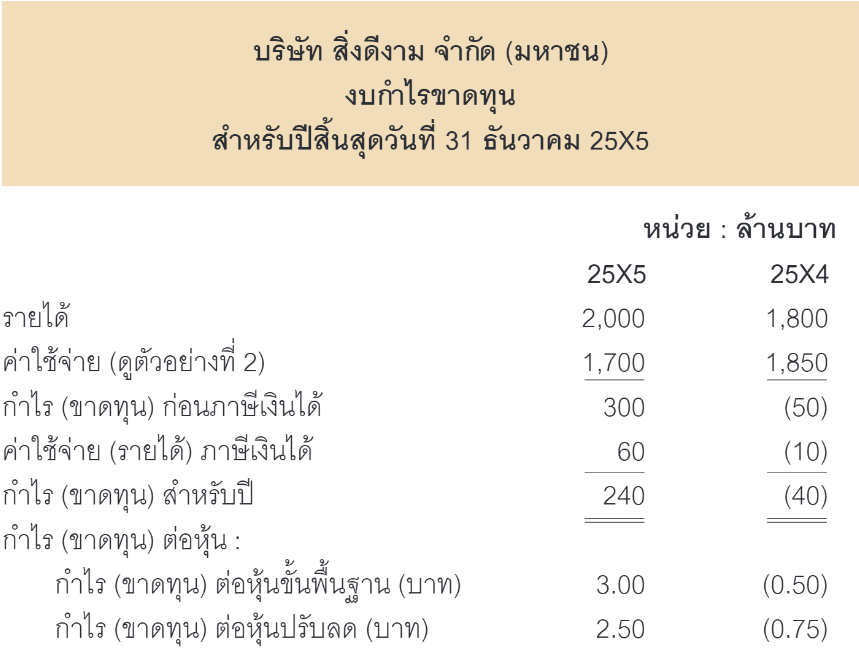
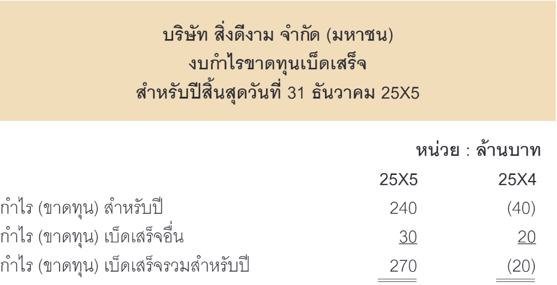
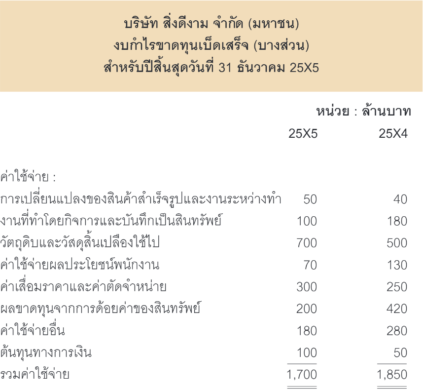
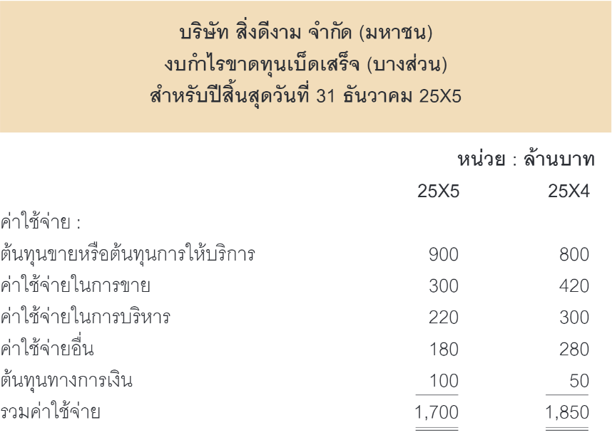
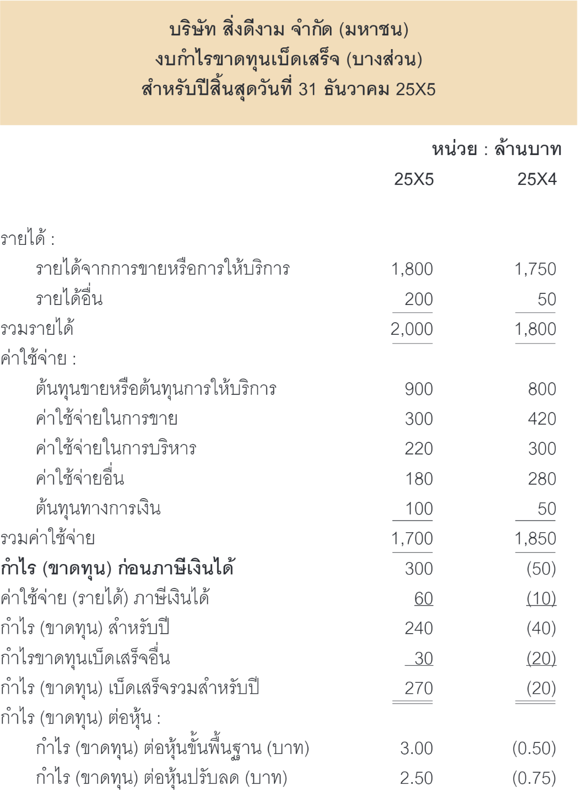
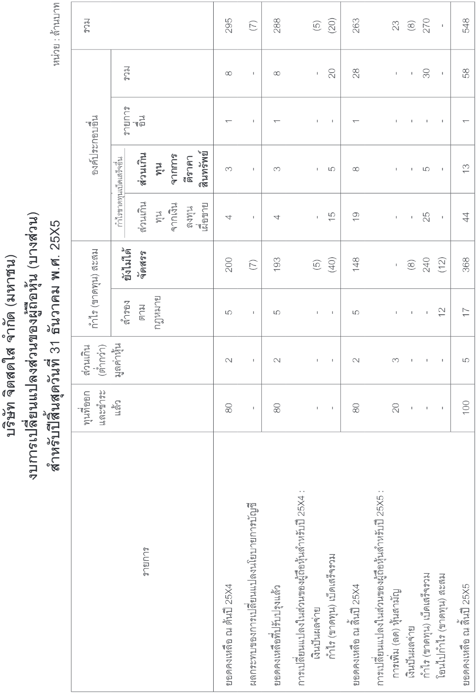
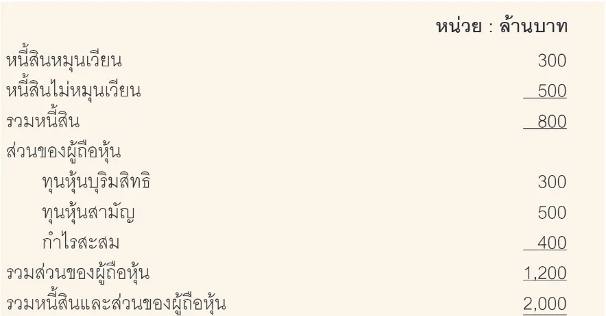
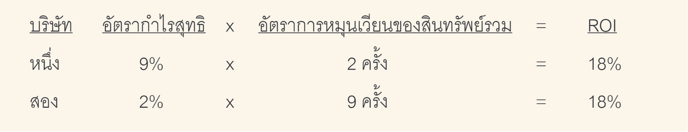
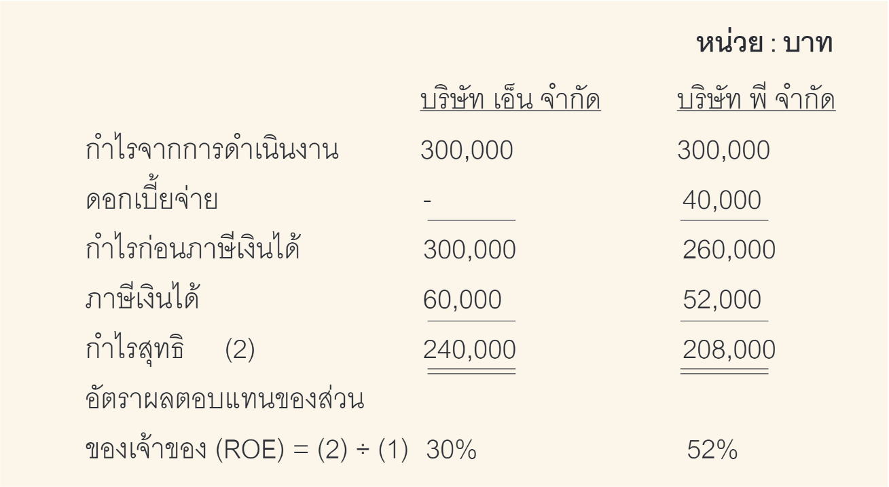

กำไรเกิดจากผลต่างระหว่างรายได้กับค่าใช้จ่าย ทั้งนี้กิจการรายงานข้อมูลกำไรไว้ในงบการเงิน 2 ส่วน คือ
1.1 การรายงานกำไรในงบกำไรขาดทุนเบ็ดเสร็จหรืองบกำไรขาดทุน
รายงานกำไรของกิจการในประเทศไทย เป็นไปตามข้อกำหนดของมาตรฐาน การรายงานทางการเงิน ซึ่งแบ่งออกเป็น 2 ชุด ดังนี้
1. มาตรฐานการรายงานทางการเงิน (หรือที่เรียกย่อๆ ว่า มาตรฐานชุดใหญ่) เป็นมาตรฐานที่อ้างอิงมาจากมาตรฐานการรายงานทางการเงินระหว่างประเทศ ใช้สำหรับกิจการที่มีส่วนได้เสียสาธารณะ (Publicly Accountable Entities PAEs) ซึ่งหมายถึงกิจการที่มีลักษณะหรือสภาพธุรกิจที่เข้าเงื่อนไขข้อใดข้อหนึ่ง หรือหลายข้อ ดังต่อไปนี้
2. มาตรฐานการรายงานทางการเงินสำหรับกิจการที่ไม่มีส่วนได้เสียสาธารณะ (หรือที่เรียกย่อ ๆ ว่า มาตรฐานชุดเล็ก) เป็นทางเลือกของกิจการขนาดเล็ก จึงใช้สำหรับกิจการที่ไม่มีส่วนได้เสียสาธารณะ (Non-Publicly Accountable Entities : NPAEs) ซึ่งหมายถึงกิจการที่ไม่ใช่กิจการที่มีส่วนได้เสียสาธารณะ (PAEs)
การจัดทำรายงานเป็นไปตามรูปแบบของประกาศกรมพัฒนาธุรกิจการค้าเรื่องกำหนดรายการย่อที่ต้องมีในงบการเงิน พ.ศ. 2566 ที่กำหนดให้
รูปแบบและรายการย่อของงบกำไรขาดทุนเบ็ดเสร็จจะมีหลักการเหมือนกับงบกำไรขาดทุนที่แสดงรายได้ ค่าใช้จ่าย และกำไร (ขาดทุน) แต่งบกำไรขาดทุนเบ็ดเสร็จจะเพิ่มกำไรขาดทุนเบ็ดเสร็จอื่นและกำไรขาดทุนเบ็ดเสร็จรวม ซึ่งสอดคล้องกับมาตรฐานการบัญชี ฉบับที่ 1 เรื่อง การนำเสนองบการเงินที่กำหนดให้กิจการจัดทำงบกำไรขาดทุนเบ็ดเสร็จ โดยกิจการต้องแสดงรายการรายได้และค่าใช้จ่ายทั้งหมดที่รับรู้ในงวดในงบการเงินตามข้อใดข้อหนึ่ง ดังต่อไปนี้
ตัวอย่างที่ 1
งบกำไรขาดทุนเบ็ดเสร็จแสดงได้ 2 แบบ คือ 1) แบบงบเดียว และ 2) แบบสองงบ ดังนี้
1. แบบงบเดียว
เป็นการนำรายได้ ค่าใช้จ่าย และกำไร (ขาดทุน) สำหรับปีแสดงรวมอยู่กับ กำไรขาดทุนเบ็ดเสร็จอื่นในหน้างบการเงินเดียวกัน แสดงได้ดังนี้
2. แบบสองงบ
เป็นการแยกรายได้ ค่าใช้จ่าย และกำไร (ขาดทุน) สำหรับปีแสดงอยู่ในงบ เฉพาะกำไรขาดทุนหนึ่งงบ เรียกว่า งบกำไรขาดทุนและงบกำไรขาดทุนเบ็ดเสร็จอีกหนึ่งงบ แสดงได้ดังนี้
 ตัวอย่างที่ 2
การแสดงค่าใช้จ่ายมี 2 วิธี คือ 1) ค่าใช้จ่ายจำแนกตามธรรมชาติของค่าใช้จ่าย และ 2) ค่าใช้จ่ายจำแนกตามหน้าที่
1. ค่าใช้จ่ายจำแนกตามธรรมชาติของค่าใช้จ่าย
เป็นการรวมค่าใช้จ่ายที่มีลักษณะเหมือนกันเข้าด้วยกัน เช่น ค่าเสื่อมราคาและค่าตัดจำหน่าย ค่าใช้จ่ายผลประโยชน์พนักงาน เป็นต้น โดยไม่ปันส่วนค่าใช้จ่ายเข้าไปในแต่ละหน่วยงานภายในกิจการ ทำให้วิธีนี้ง่ายต่อการปฏิบัติงานของผู้จัดทำงบการเงิน แสดงได้ดังนี้
2. ค่าใช้จ่ายจำแนกตามธรรมชาติของค่าใช้จ่าย
เป็นการจัดประเภทค่าใช้จ่ายตามหน้าที่ของค่าใช้จ่าย เช่น ต้นทุนขาย ค่าใช้จ่ายในการบริหาร เป็นต้น โดยปันส่วนค่าใช้จ่ายเข้าไปในแต่ละหน่วยงานภายในกิจการทำให้วิธีนี้ยุ่งยากต่อการปฏิบัติการของผู้จัดทำงบการเงิน แต่วิธีนี้จะให้ข้อมูลที่มีความเกี่ยวข้องแก่ผู้ใช้งบการเงินมากกว่าวิธีที่ 1) ข้างต้น แสดงได้ดังนี้
ตัวอย่างที่ 3
การแสดงกำไรเมื่อแสดงค่าใช้จ่ายจำแนกตามหน้าที่ มี 2 แบบ คือ 1) แบบขั้นเดียว และ 2) แบบหลายขั้น ในตัวอย่างนี้จะนำเสนอเฉพาะการแสดงค่าใช้จ่ายจำแนกหน้าที่แบบขั้นเดียว ซึ่งเป็นการแสดงกำไรเพียงรายการเดียวคือ กำไร (ขาดทุน) ก่อนภาษีเงินได้ ดังนี้
1.2. การรายงานกำไรในงบการเปลี่ยนแปลงส่วนของเจ้าของ
กิจการที่จดทะเบียนจัดตั้งในรูปบริษัท เรียกส่วนของเจ้าของว่าส่วนของผู้ถือหุ้น ซึ่งประกอบด้วยทุนเรือนหุ้น ส่วนเกิน (ต่ำกว่า) ทุน และกำไรสะสม
ดังนั้นกำไรหรือกำไรสุทธิจึงนำไปรวมอยู่ในกำไรสะสม ซึ่งแสดงอยู่ในงบการเปลี่ยนแปลงส่วนของผู้ถือหุ้น งบการเปลี่ยนแปลงส่วนของผู้ถือหุ้นประกอบด้วยหลายรายการที่เกี่ยวข้อง กับกำไร คือ รายการกำไร (ขาดทุน) สะสม และกำไรขาดทุนเบ็ดเสร็จอื่น รูปแบบและรายการย่อของงบกำไรขาดทุนเบ็ดเสร็จจะมีหลักการเหมือนกับงบกำไรขาดทุนที่แสดงรายได้ ค่าใช้จ่าย และกำไร (ขาดทุน) แต่งบกำไรขาดทุนเบ็ดเสร็จจะเพิ่มกำไรขาดทุนเบ็ดเสร็จอื่นและกำไรขาดทุนเบ็ดเสร็จร่วม
ตัวอย่างที่ 4
งบการเปลี่ยนแปลงส่วนของผู้ถือหุ้น
ผู้วิเคราะห์งบการเงินสามารถนำข้อมูลกำไรจากงบการเงินมาวิเคราะห์ได้ โดยนำกำไรมาเปรียบเทียบกับสิ่งต่อไปนี้ 1. ยอดขายในงบกำไรขาดทุนเบ็ดเสร็จ 2. เงินปันผลจ่ายในงบการเปลี่ยนแปลงส่วนของเจ้าของ 3. รายการในงบฐานะการเงิน นอกจากนี้ผู้วิเคราะห์ควรทราบถึง 4. การวิเคราะห์กำไรแบบดูปองต์ 5. การวิเคราะห์กำไรกับภาระ (Leverage)
2.1 การวิเคราะห์กำไรจากงบกำไรขาดทุนเบ็ดเสร็จ
การวิเคราะห์กำไรเพื่อให้ทราบถึงความสามารถในการทำกำไรของกิจการซึ่งเป็นสิ่งจำเป็นและมีความสำคัญต่อการประมินการเปลี่ยนแปลงในอนาคตที่ อาจเกิดขึ้นกับสินทรัพย์ของกิจการการวิเคราะห์กำไรมีประโยชน์ในการคาดคะเนความสามารถของกิจการในการก่อให้เกิดกระแสเงินสดจากสินทรัพย์ที่มีอยู่ และในการพิจารณาประสิทธิผลของกิจการในการใช้สินทรัพย์นั้น
การวิเคราะห์กำไรจากงบกำไรขาดทุนเบ็ดเสร็จ เป็นการเปรียบเทียบกำไรกับยอดขายหรือรายได้จากการขาย โดยใช้อัตราส่วนทางการเงินมีดังนี้
อัตรากำไรขั้นต้น (Gross Profit Margin or Gross Profit Rate)
มีสูตรการคำนวณดังนี้
อัตรากำไรขั้นต้น เป็นอัตราส่วนทางการเงินที่ใช้วัดอัตราผลตอบแทนในรูปกำไรขั้นต้น ซึ่งเกิดขึ้นจากรายได้จากการขายสินค้าหักด้วยต้นทุนสินค้าขาย โดยยังไม่คำนึงถึงค่าใช้จ่ายในการขาย ค่าใช้จ่ายในการบริหาร ต้นทุนทางการเงินและภาษีเงินได้ กิจการทั่วไปควรมีอัตรากำไรขั้นต้นเป็นร้อยละ 20 ถึงร้อยละ 30 ทั้งนี้ ขึ้นอยู่กับชนิดของสินค้า ประเภทของธุรกิจ และอุตสาหกรรมที่กิจการดำเนินการอยู่
อัตรากำไรขั้นต้นมีค่าสูง แสดงว่ากิจการมีความสามารถในการทำกำไรขั้นต้นได้สูง แต่ถ้าอัตรากำไรขั้นต้นมีค่าต่ำ แสดงว่ากิจการมีความสามารถในการทำกำไรขั้นต้นได้ต่ำ
ตัวอย่างที่ 5
จากตัวอย่างที่ 3 บริษัท สิ่งดีงาม จำกัด (มหาชน) คำนวณหาอัตรากำไรขั้นต้นได้ดังนี้
จากอัตรากำไรขั้นต้นข้างต้น แสดงว่าในปี 25X5 บริษัทมีความสามารถในการทำกำไรขั้นต้นลดลง 54.29 - 50 = 4.29%
อัตรากำไรจากการดำเนินงาน (Operating Profit Margin)
หรือ Operating Profit Rate มีสูตรการคำนวณดังนี้
อัตรากำไรจากการดำเนินงาน เป็นอัตราส่วนทางการเงินที่ใช้วัดอัตราผลตอบแทนในรูปกำไรก่อนดอกเบี้ยจ่ายและภาษีเงินได้ (Earnings Before Interest and Tax : EBIT) โดยนำกำไรขั้นต้นหักด้วยค่าใช้จ่ายในการขายและค่าใช้จ่ายในการ บริหาร กิจการทั่วไปควรมีอัตรากำไรจากการดำเนินการเป็นร้อยละ 10 ถึงร้อยละ 20 ทั้งนี้ขึ้นอยู่กับชนิดของสินค้า ประเภทธุรกิจ และอุตสาหกรรมที่กิจการดำเนินการอยู่
อัตรากำไรจากการดำเนินงานมีค่าสูงหรือค่าต่ำ แปลความหมายเช่นเดียวกับอัตรากำไรขั้นต้น
ตัวอย่างที่ 6
จากตัวอย่างที่ 3 บริษัท สิ่งดีงาม จำกัด (มหาชน) คำนวณหาอัตรากำไรจากการดำเนินงานได้ดังนี้
จากอัตรากำไรจากการดำเนินงานข้างต้น แสดงว่าในปี 25X5 บริษัท มสามารถในทำกำไรจากการดำเนินงานเพิ่มขึ้นอย่างมากจากปี 25X4 เป็น 0% ส่วนปี 25X5 กลายเป็น 22.22%
อัตรากำไรสุทธิ (Net Profit Margin)
หรืออัตราผลตอบแทนต่อยอดขาย (Return on Sale: ROS) มีสูตรการคำนวณดังนี้
อัตรากำไรสุทธิ เป็นอัตราส่วนทางการเงินที่ใช้วัดอัตราผลตอบแทนในรูปกำไรสุทธิ โดยนำกำไรจากการดำเนินงาน หักด้วยต้นทุนทางการเงิน (หรือดอกเบี้ยจ่าย) และภาษีเงินได้ กิจการทั่วไปควรมีอัตรากำไรสุทธิเป็นร้อยละ 5 ถึงร้อยละ 10 ทั้งนี้ ขึ้นอยู่กับชนิดของสินค้า ประเภทของธุรกิจ และอุตสาหกรรมที่กิจการดำเนินการอยู่
อัตรากำไรสุทธิมีค่าสูงหรือค่าต่ำ แปลความหมายเช่นเดียวกับอัตรากำไรขั้นต้น
ตัวอย่างที่ 7
จากตัวอย่างที่ 1 และตัวอย่างที่ 3 บริษัท สิ่งดีงาม จำกัด (มหาชน) คำนวณหาอัตรากำไรสุทธิได้ดังนี้จากอัตรากำไรสุทธิข้างต้น แสดงว่าในปี 25X5 บริษัทมีความสามารถในการ ทำกำไรสุทธิเพิ่มขึ้นจากปี 25X4 เป็น -2.29% ส่วนปี 25X5 กลายเป็น 13.33%
2.2 การวิเคราะห์กำไรจากงบการเปลี่ยนแปลงส่วนของเจ้าของ
การวิเคราะห์กำไรจากงบการเปลี่ยนแปลงส่วนของเจ้าของเป็นการเปรียบเทียบกำไรกับเงินปันผลจ่ายซึ่งอยู่ในงบการเปลี่ยนแปลงส่วนของเจ้าของกิจการต้องแสดงจำนวนเงินปันผลที่จ่ายให้แก่ผู้เป็นเจ้าของในระหว่างงวดในงบการเปลี่ยนแปลงส่วนของเจ้าของหรือในหมายเหตุประกอบงบการเงิน พร้อมทั้งแสดงจำนวนต่อหุ้นที่เกี่ยวข้อง ดังนั้นข้อมูลเงินปันผลจ่ายได้รายงานไว้ในงบการเงินผู้วิเคราะห์งบการเงินสามารถหาข้อมูลเงินปันผลจ่ายได้โดยง่าย
อัตราส่วนทางการเงินที่ใช้วิเคราะห์กำไรจากเงินปันผลจ่ายที่สำคัญและนิยม ใช้กันมากมีดังนี้
อัตราการจ่ายเงินปันผล (Dividend Payout Ratio)
มีสูตรการคำนวณดังนี้
อัตราการจ่ายเงินปันผลเป็นอัตราส่วนทางการเงินที่ใช้วัดสัดส่วนของการจ่ายเงินปันผลต่อหุ้นจากกำไรต่อหุ้นที่กิจการทำมาหาได้ อัตราการจ่ายเงินปันผลนี้เป็นไปตามนโยบายเงินปันผลของกิจการ กิจการบางแห่งมีนโยบายเงินปันผลจ่าย เป็นประจำทุกปีในอัตราคงที่หรืออัตราเติบโต แต่กิจการบางแห่งไม่มีนโยบายเงินปันผลจ่าย แต่นำกำไรสุทธิไปสะสมไว้และใช้ลงทุนต่อ (Reinvestment) ภายในกิจการ และส่งผลให้ราคาตลาดของหุ้นสามัญของกิจการเพิ่มขึ้นเมื่อผู้ถือหุ้นขายหุ้น สามัญจะเกิดกำไรจากการขายหุ้น (Capital Gain)
ตัวอย่างที่ 8
จากตัวอย่างที่ 1 บริษัท สิ่งดีงาม จำกัด (มหาชน) มีเงินปันผลจ่ายต่อหุ้นของ ปี 25X5 และปี 25X4 จำนวน 1 บาท และ 0.50 บาท ตามลำดับ คำนวณหาอัตราการจ่ายเงินปันผลได้ดังนี้
จากอัตราการจ่ายเงินปันผลข้างต้น แสดงว่าในปี 25X5 บริษัทจ่ายเงินปันผล 33.33% ของกำไร ส่วนในปี 25X4 บริษัทจ่ายเงินปันผลเช่นกัน แม้ว่าบริษัทมีผลขาดทุน แต่บริษัทยังมีกำไรสะสมและเงินสดเพียงพอที่จะจ่ายเงินปันผลได้
กรณีที่กิจการไม่จ่ายเงินปันผล แต่นำกำไรสุทธิไปสะสมไว้และใช้ลงทุนต่อภายในกิจการ ผู้วิเคราะห์สามารถคำนวณหาอัตราส่วนการคงไว้ของกำไร (Retention Ratio) ได้ดังนี้
จากตัวอย่างที่ 8 บริษัท สิ่งดีงาม จำกัด (มหาชน) มีอัตราส่วนการคงไว้ ของกำไรในปี 25X5 ดังนี้
จากอัตราส่วนการคงไว้ของกำไรข้างต้น แสดงว่าบริษัทคงกำไรไว้ 66.67% ของกำไร ส่วนที่เหลือนำไปจ่ายเงินปันผล 33.33% ของกำไร
อัตราความสามารถในการจ่ายเงินปันผล (Dividend Coverage Ratio)
มีสูตรการคำนวณ ดังนี้
อัตราความสามารถในการจ่ายเงินปันผล เป็นอัตราส่วนทางการเงินที่ใช้วัดความสามารถของกิจการในการจ่ายเงินปันผลให้แก่ผู้ถือหุ้นสามัญโดยนำกำไรสุทธิหักด้วยเงินปันผลที่จ่ายให้แก่ผู้ถือหุ้นบุริมสิทธิเป็นกำไรสุทธิส่วนของผู้ถือหุ้นสามัญ แล้วนำมาเทียบกับเงินปันผลที่จ่ายให้แก่ผู้ถือหุ้นสามัญ
ถ้าอัตราความสามารถในการจ่ายเงินปันผลมีค่ามากกว่า 100% แสดงว่ากิจการมีความสามารถในการจ่ายเงินปันผลให้แก่ผู้ถือหุ้นสามัญสูง แต่ถ้าอัตราความสามารถในการจ่ายเงินปันผลมีค่าน้อยกว่า 100% แสดงว่ากิจการมีความสามารถในการจ่ายเงินปันผลให้แก่ผู้ถือหุ้นสามัญต่ำ
ตัวอย่างที่ 9
จากตัวอย่างที่ 8 บริษัท สิ่งดีงาม จำกัด (มหาชน) มีทุนหุ้นสามัญ 80 ล้านหุ้น ทุนหุ้นบุริมสิทธิ 10 ล้านหุ้น ในปี 25X5 และปี 25X4 และประกาศจ่ายเงินปันผลให้ผู้ถือหุ้นสามัญและหุ้นบุริมสิทธิในปี 25X5 และ 25X4 ในอัตราเดียวกันหุ้นละ 1 บาท และ 0.50 บาท ตามลำดับ คำนวณหาอัตราความสามารถในการจ่ายเงินปันผล
จากอัตราความสามารถในการจ่ายเงินปันผลข้างต้น ในปี 25X5 บริษัทมีกำไรสุทธิหลังจากจ่ายเงินปันผลให้แก่ผู้ถือหุ้นบุริมสิทธิแล้ว สามารถนำไปจ่ายเงินปันผลให้แก่ผู้ถือหุ้นสามัญได้ 287.5% หรือ 2.875 เท่าของเงินปันผลหุ้นสามัญแสดงว่าบริษัทมีความสามารถในการจ่ายเงินปันผลได้ดี
2.3 การวิเคราะห์กำไรกับข้อมูลในงบฐานะการเงิน
การวิเคราะห์กำไร โดยนำข้อมูลกำไรจากงบกำไรขาดทุนเบ็ดเสร็จเปรียบเทียบกับข้อมูลในงบฐานะการเงิน เช่น สินทรัพย์รวม เงินทุนระยะยาว และส่วนของเจ้าของ เป็นต้น โดยใช้อัตราส่วนทางการเงินมีดังนี้
อัตราผลตอบแทนจากการลงทุน (Return on Investment : ROI)
เป็นมาตรวัดผลการปฏิบัติงานของฝ่ายบริหารหรือการวัดความสามารถในการทำกำไร ของกิจการที่นิยมใช้กันมาก ROI มีสูตรคำนวณดังนี้
อัตราผลตอบแทนจากการลงทุนเป็นอัตราส่วนทางการเงินที่ใช้วัดความสามารถในการทำกำไรจากเงินลงทุนเฉลี่ย เงินลงทุน หมายถึง สินทรัพย์ที่กิจการมีไว้ใช้ในการดำเนินงานได้ (Operating Assets) หรือสินทรัพย์รวมหักด้วยสินทรัพย์ระหว่างการก่อสร้าง เงินลงทุนระยะยาว และสินทรัพย์ไม่มีตัวตน ทั้งนี้ คำว่า เฉลี่ย หมายถึง ผลรวมของยอดคงเหลือต้นปีกับยอดคงเหลือสิ้นปี แล้วหารด้วย 2 เป็นค่าเฉลี่ย อย่างไรก็ตาม ผู้วิเคราะห์นิยมใช้ยอดคงเหลือสิ้นปีแทนยอดคงเหลือเฉลี่ย
ถ้าอัตราผลตอบแทนจากการลงทุนมีค่าสูง แสดงว่ากิจการมีความสามารถในการทำกำไรสูง แต่ถ้าอัตราผลตอบแทนจากการลงทุนมีค่าต่ำ แสดงว่ากิจการมีความสามารถในการทำกำไรต่ำ
ตัวอย่างที่ 10
จากตัวอย่างที่ 1 บริษัท สิ่งดีงาม จำกัด (มหาชน) มีข้อมูล ณ สิ้นปี 25X5 ดังนี้
สินทรัพย์รวม 2,000 ล้านบาท ในจำนวนนี้มีเงินลงทุนระยะยาว 100 ล้านบาทและสินทรัพย์ไม่มีตัวตน 50 ล้านบาท ดังนั้น เงินลงทุนจึงเท่ากับ 2000 - 100 - 50 = 1,850 ล้านบาท
สมมติอัตราผลตอบแทนจากการลงทุนของค่าเฉลี่ยอุตสาหกรรมเป็น 10% แสดงว่าบริษัทมีความสามารถในการทำกำไรจากเงินลงทุนสูงกว่าหรือดีกว่าค่าเฉลี่ยของอุตสาหกรรม
อัตราผลตอบแทนต่อสินทรัพย์รวม (Return on Assets : ROA)
มีสูตรการคำนวณดังนี้
อัตราผลตอบแทนต่อสินทรัพย์รวม เป็นอัตราส่วนทางการเงินที่ใช้วัดความสามารถในการทำกำไรจากสินทรัพย์รวม มีลักษณะเช่นเดียวกับอัตราผลตอบแทนจากการลงทุน ผู้วิเคราะห์บางท่านอนุโลมให้ ROA เท่ากับ ROI เพราะว่า สินทรัพย์รวมมีค่าใกล้เคียงกับเงินลงทุน
การแปลความหมายของ ROA เป็นไปทำนองเดียวกันกับ ROI ผู้วิเคราะห์บางท่านคำนวณหาอัตราผลตอบแทนต่อสินทรัพย์รวมจากกำไรสุทธิก่อนดอกเบี้ยจ่าย (Net Profit before Interest) โดยใช้ กำไรสุทธิ + (ดอกเบี้ยจ่าย x (1 - อัตราภาษี)) อย่างไรก็ตาม ผู้วิเคราะห์นิยมใช้กำไรสุทธิกันมากกว่า
ตัวอย่างที่ 11
จากตัวอย่างที่ 10 บริษัท สิ่งดีงาม จำกัด (มหาชน) คำนวณหาอัตราผลตอบแทนต่อสินทรัพย์รวมของปี 25X5 ได้ดังนี้
อัตราผลตอบแทนต่อส่วนของเจ้าของ (Return on Equity : ROE)
บางทีเรียกว่า อัตราผลตอบแทนต่อสินทรัพย์สุทธิ (Return on Net Worth) มีสูตรการคำนวณดังนี้
อัตราผลตอบแทนต่อส่วนของเจ้าของ เป็นอัตราส่วนทางการเงินที่ได้วัดความสามารถในการทำกำไรจากส่วนของเจ้าของ มีลักษณะคล้ายกับอัตราผลตอบแทนจากการลงทุน
ตัวอย่างที่ 12
จากตัวอย่างที่ 1 บริษัท สิ่งดีงาม จำกัด (มหาชน) มีข้อมูลเพิ่มเติม ณ สิ้นปี 25X5 ดังนี้
อัตราผลตอบแทนจากเงินทุนระยะยาว (Return on Capital Employed : ROCE)
มีสูตรการคำนวณดังนี้
อัตราผลตอบแทนจากเงินทุนระยะยาว เป็นอัตราส่วนทางการเงินที่ใช้วัดความสามารถในการทำกำไรจากเงินทุนระยะยาว (Capital Employed or Invested Capital) ซึ่งหมายถึง หนี้สินไม่หมุนเวียนและส่วนของเจ้าของแล้วนำไปหา ค่าเฉลี่ยของยอดคงเหลือต้นปี บวกยอดคงเหลือสิ้นปี หารด้วย 2 มีลักษณะคล้ายกับ อัตราผลตอบแทนจากการลงทุน (ROI)
ตัวอย่างที่ 13
จากตัวอย่างที่ 12 บริษัท สิ่งดีงาม จำกัด (มหาชน)
อัตราผลตอบแทนจากส่วนของผู้ถือหุ้นสามัญ (Return on Common Shares Equity : ROCSE)
อัตราผลตอบแทนจากส่วนของผู้ถือหุ้นสามัญ เป็นอัตราส่วนทางการเงินที่ใช้วัดความสามารถในทำกำไรจากส่วนของผู้ถือหุ้นสามัญ มีลักษณะเช่นเดียวกับอัตราผลตอบแทนจากการลงทุน
ตัวอย่างที่ 14
จากตัวอย่างที่ 12 บริษัท สิ่งดีงาม จำกัด (มหาชน) ในปี 25X5 บริษัทจ่ายเงินปันผลให้แก่ผู้ถือหุ้นสามัญ 20 ล้านบาท
กำไรต่อหุ้น (Earnings Per Share : EPS)
มีสูตรการคำนวณดังนี้
กำไรต่อหุ้น เป็นอัตราส่วนทางการเงินที่ใช้วัดความสามารถในการทำกำไรของผู้ถือหุ้นสามัญต่อหนึ่งหุ้นสามัญ
2.4 การวิเคราะห์กำไรแบบดูปองต์
บริษัท ดูปองต์ จำกัด (DuPont Corporation) ได้พัฒนาการวัดผลการปฏิบัติงานของฝ่ายบริหารขึ้นโดยพิจารณาจากอัตรากำไรสุทธิ (Net Profit Margin) และอัตราการหมุนเวียนของสินทรัพย์รวม (Total Asset Turnover) ซึ่งเป็นการแตกสูตรของอัตราผลตอบแทนจากการลงทุน (ROI) หรืออัตราผลตอบแทนต่อสินทรัพย์รวม (ROA) ออกมาเป็น 2 รายการ เรียกว่า สูตรดูปองต์ (DuPont Formula) มีดังนี้
จากสูตรดูปองต์จะเห็นว่าความสามารถในการทำกำไรไม่ได้วัดจากอัตรากำไรสุทธิเพียงอย่างเดียว แต่ต้องคำนึงถึงอัตราการหมุนเวียนของสินทรัพย์รวมด้วย ดังนั้นความสามารถของกิจการในการใช้สินทรัพย์ไปก่อให้เกิดรายได้ย่อมมีผลต่อความสามารถในการทำกำไรเช่นเดียวกัน ผู้บริหารต้องการปรับปรุงกำไรให้เพิ่มขึ้นในขั้นของการวางแผนกำไร ผู้บริหารควรพิจารณา 2 รายการข้างต้นว่ากิจการมีจุดอ่อนหรือควรปรับปรุงเรื่องใด
ตัวอย่างที่ 15
บริษัท มีสิทธิ์ จำกัด มีกำไรสุทธิ 18,000 บาท ยอดขาย 200,000 บาท และสินทรัพย์รวม 100,000 บาท
การแตกสูตรของ ROI ออกมาเป็น 2 รายการตามสูตรดูปองต์ ช่วยทำให้ ฝ่ายบริหารเข้าใจได้ง่ายขึ้นว่า ROI ในอัตราเดียวกัน อาจเกิดผลคูณของ 2 รายการ ที่แตกต่างกันได้
ตัวอย่างที่ 16
บริษัท 2 แห่ง มี ROI = 18% แต่มีอัตรากำไรสุทธิและอัตราการหมุนเวียนของสินทรัพย์รวมที่แตกต่างกัน ดังนี้
บริษัท หนึ่ง ประกอบธุรกิจขายเพชร พลอย อัญมณี มีอัตรากำไรสุทธิสูงแต่มีอัตราการหมุนเวียนของสินทรัพย์รวมต่ำ
บริษัท สอง ประกอบธุรกิจขายสินค้าอุปโภคบริโภค มีอัตรากำไรสุทธิต่ำแต่มีอัตราการหมุนเวียนของสินทรัพย์รวมสูง
ตัวอย่างที่ 17
จากตัวอย่างที่ 15 บริษัท มีสิทธิ์ จำกัด ต้องการวางแผนกำไรในปีหน้า ให้มี ROI = 20% ในขณะที่ปัจจุบัน ROI = 18%
ผู้บริหารของบริษัทมีทางเลือกในการปรับปรุงกำไรได้หลายทาง เช่น
ทางเลือกที่ 1 เพิ่มอัตรากำไรสุทธิและให้อัตราการหมุนเวียนของสินทรัพย์รวมคงเดิม โดยการลดค่าใช้จ่ายลง 2,000 บาท (เช่น ค่าอบรมสัมมนาของฝ่ายบริหาร เป็นต้น) ซึ่งไม่มีผลกระทบต่อยอดขายและสินทรัพย์รวม
ทางเลือกที่ 2 เพิ่มอัตราการหมุนเวียนของสินทรัพย์รวมและให้อัตรากำไรสุทธิคงเดิมโดยการลดสินทรัพย์รวมลง 10,000 บาท (เช่น ขายอุปกรณ์ที่ไม่ได้ใช้งาน) ซึ่งไม่มีผลกระทบต่อยอดขายและกำไรสุทธิ
ทางเลือกที่ 3 เพิ่มอัตรากำไรสุทธิและอัตราการหมุนเวียนของสินทรัพย์รวมโดยการลดสินค้าคงเหลือที่ล้าสมัย 5,000 บาท และลดค่าใช้จ่ายในการจัดเก็บรักษาสินค้าได้ 1,000 บาท
สูตรดูปองต์ดัดแปลง (Modified DuPont Formula) คือ อัตราผลตอบแทนต่อส่วนของเจ้าของ (ROE) เป็นการใช้สูตรดูปองต์เดิม คือ ROI มาปรับด้วยระดับของภาระการเงิน (Degree of Financial Leverage) ซึ่งวัดด้วยตัวทวีคูณส่วนของเจ้าของ (Equity Multiplier) ซึ่งเป็นอัตราส่วนทางการเงินที่แสดงว่าสินทรัพย์รวมของกิจการมีส่วนของเจ้าของอยู่เท่าใด กล่าวอีกอย่างหนึ่งคือ ส่วนของเจ้าของ 1 บาทถือสินทรัพย์รวมกี่บาท
อัตราผลตอบแทนของส่วนของเจ้าของ (Return on Equity : ROE) มีสูตร การคำนวณดังนี้
ตัวทวีคูณส่วนของเจ้าของ (Equity Multiplier : EM) คือ ส่วนกลับของอัตราส่วน ส่วนของเจ้าของต่อสินทรัพย์รวม
ตัวอย่างที่ 18
จากตัวอย่างที่ 15 บริษัท มีสิทธิ์ จำกัด มีส่วนของผู้ถือหุ้น (หรือส่วนของ เจ้าของ) 45,000 บาท
ตัวอย่างที่ 19
บริษัท เอ็น จำกัด และบริษัท พี จำกัด มีโครงสร้างทางการเงินแตกต่างกัน กำไรสุทธิแตกต่างกันแต่มีกำไรจากการดำเนินงานเท่ากันคือ 300,000บาทใช้สินทรัพย์รวมเท่ากัน คือ 800,000 บาท แต่บริษัท เอ็น จำกัด ไม่มีหนี้สิน ส่วนบริษัท พี จำกัด มีหนี้สิน 400,000 บาท โครงสร้างทางการเงินมีดังนี้
อัตราดอกเบี้ยของหนี้สิน 10% ต่อปี ดังนั้นบริษัท พี จำกัด จ่ายดอกเบี้ย 10% x 400,000 = 4,000 บาท สมมติอัตราภาษีเงินได้ 20% การคำนวณหาอัตรา ผลตอบแทนของส่วนของเจ้าของ (ROE) เป็นดังนี้
เมื่อพิจารณา ROE พบว่า ROE ของบริษัท พี จำกัด สูงกว่าของบริษัท เอ็น จำกัด อย่างไรก็ตาม บริษัท พี จำกัด มีความเสี่ยงทางการเงินสูงกว่าบริษัท เอ็น จำกัด
2.5. การวิเคราะห์กำไรกับภาระ
ภาระ (Leverage) หมายถึง ข้อผูกมัดที่สร้างภาระให้แก่กิจการ มีผลทำให้ กิจการต้องทำกำไรมาชดเชยภาระดังกล่าว ภาระแบ่งออกเป็น 3 ประเภท คือ
ภาระการดำเนินงาน (Operating Leverage)
หมายถึง ภาระที่เกิดจากส่วนของต้นทุนการดำเนินงานส่วนคงที่ซึ่งเป็นความเสี่ยงในการดำเนินงาน (Operating Risk) ของกิจการ ต้นทุนการดำเนินงาน หมายถึง ต้นทุนขายและหรือต้นทุนในการให้บริการ ค่าใช้จ่ายในการขายและค่าใช้จ่ายในการบริหารต้นทุน การดำเนินงานแบ่งออกเป็น 2 ประเภท คือ 1) ต้นทุนการดำเนินงานผันแปร และ 2) ต้นทุนการดำเนินงานคงที่
ระดับภาระการดำเนินงาน (Degree of Operating Leverage : DOL)
คำนวณจากอัตราส่วนร้อยละของการเปลี่ยนแปลงของกำไรจากการดำเนินงาน (หรือกำไรก่อนดอกเบี้ยจ่ายและภาษีเงินได้) กับอัตราร้อยละของการเปลี่ยนแปลงของยอดขาย เขียนเป็นสูตรได้ดังนี้
ตัวอย่างที่ 20
บริษัท จำไว้ จำกัด ผลิตและขายกระเป๋าสะพาย กระเป๋าสะพายมีราคาขายใบละ 250 บาท ต้นทุนการดำเนินงานผันแปรใบละ 150 บาท และต้นทุนการดำเนินงานคงที่รวม 500,000 บาท ปัจจุบันบริษัทขายกระเป๋าสะพายได้ 6,000 ใบ
DOL = 6 เท่า หมายความว่า ถ้ายอดขายของบริษัทเพิ่มขึ้น (ลดลง) ร้อยละ 1 มีผลทำให้บริษัทมีกำไรสุทธิเพิ่มขึ้น (ลดลง) เป็น 6 เท่าของร้อยละ 1 คือ ร้อยละ 6
ภาระการเงิน (Financial Leverage)
หมายถึง ภาระที่เกิดจากหนี้สิน ซึ่งเป็นความเสี่ยงทางการเงิน (Financial Risk) ของกิจการ ทำให้กิจการเกิดต้นทุนทางการเงิน ซึ่งเป็นต้นทุนคงที่อย่างหนึ่ง (เช่น ดอกเบี้ยจ่าย การชำระคืนเงินกู้ เป็นต้น) แก่กิจการ โดยมีผลทำให้กำไรของกิจการลดลง
ภาระการเงินยิ่งสูงย่อมก่อให้เกิดความเสี่ยงทางการเงินยิ่งสูง และต้นทุนของ เงินทุน (Cost of Capital) ยิ่งสูง
ระดับภาระการเงิน (Degree of Financial Leverage : DFL)คำนวณจากอัตราส่วนของร้อยละของการเปลี่ยนแปลงของกำไรต่อหุ้นกับอัตราร้อยละของการเปลี่ยนแปลงของกำไรจากการดำเนินงาน เขียนเป็นสูตรได้ดังนี้
ตัวอย่างที่ 21
จากตัวอย่างที่ 20 บริษัท จำไว้ จำกัด มีต้นทุนทางการเงินคงที่ 20,000 บาท
DFL = 1.25 เท่า หมายความว่า ถ้ากำไรจากการดำเนินงานของบริษัทเพิ่มขึ้น (ลดลง) ร้อยละ 1 มีผลทำให้บริษัทมีกำไรต่อหุ้นเพิ่มขึ้น (ลดลง) เป็น 1.25 เท่า ของร้อยละ 1 คือ ร้อยละ 1.25
ภาระรวม (Total Leverage)
หมายถึง ภาระการดำเนินงาน และภาระการเงินรวมกัน ระดับภาระรวม (Degree of Total Leverage : DTL) คำนวณจากอัตราส่วน ของร้อยละของการเปลี่ยนแปลงของกำไรต่อหุ้นกับร้อยละของการเปลี่ยนแปลงของ ยอดขาย เขียนเป็นสูตรได้ดังนี้
ตัวอย่างที่ 22
จากตัวอย่างที่ 20 และตัวอย่างที่ 21
DTL = 7.5 เท่า หมายความว่า ถ้ายอดขายของบริษัทเพิ่มขึ้น (ลดลง) ร้อยละ 1 มีผลทำให้บริษัทมีกำไรต่อหุ้นเพิ่มขึ้น (ลดลง) เป็น 7.5 เท่าของร้อยละ 1 คือร้อยละ 7.5
การรายงานกำไรและการวิเคราะห์ในแต่ละธุรกิจจะมีข้อมูลและปัจจัยของธุรกิจที่ต้องนำมาสังเคราะห์ร่วมตัวเลขทางการเงินที่นำมาวิเคราะห์เพื่อให้ข้อมูลของการวิเคราะห์เป็นประโยชน์ต่อฝ่ายบริหารขององค์กรโดยการนำเสนอผลการวิเคราะห์ ที่เป็นประเด็นสำคัญต่อฝ่ายบริหารเพื่อการตัดสินใจ
สิ่งสำคัญของผู้วิเคราะห์นอกจากข้อมูลที่มาจากรายงานทางการเงินแล้ว จะต้องนำข้อมูลจริงวิเคราะห์เปรียบเทียบกับงบประมาณเพื่อให้ทราบความแตกต่างเกิดขึ้นจากสาเหตุใด จะได้เป็นข้อมูลเพื่อปรับกลยุทธ์และวางแผนงบประมาณในปีถัดไป